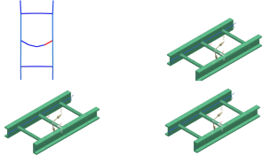

Divide the display into four viewports
To make it easier to select elements for a beam cross section display, divide your display into viewports.
 Layout Settings (Layout group)
Layout Settings (Layout group)
-
 User Selected Viewport
User Selected Viewport -
OK
 Four Views (Layout group)
Four Views (Layout group)
